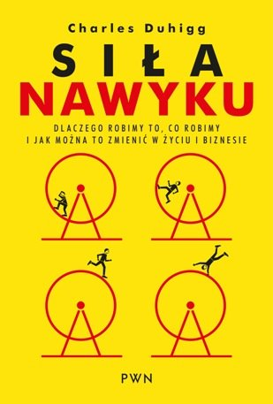

O mnie
Cześć! Nazywam się Antoni, jestem youtuberem specjalizującym się w sferze rozwoju osobistego. Moja pasja to pomaganie innym w osiąganiu ich celów i pełnego potencjału. Od zawsze fascynowały mnie wyzwania, które pozwalają mi wyjść poza strefę komfortu i rozwijać swoje umiejętności w różnych dziedzinach. Lubię podejmować ambitne zadania, bo to daje mi poczucie spełnienia i sprawia, że staję się coraz lepszą wersją siebie.
Kanał na YouTube
Galeria zdjęć

Lista książek do przeczytania
- „Myślenie, szybkie i wolne” – Daniel Kahneman
-
 „7 nawyków skutecznego działania” – Stephen R. Covey
„7 nawyków skutecznego działania” – Stephen R. Covey
-  „Potęga nawyku” – Charles Duhigg
-
 „Kompas wewnętrzny” – Manfred Kets de Vries
„Kompas wewnętrzny” – Manfred Kets de Vries